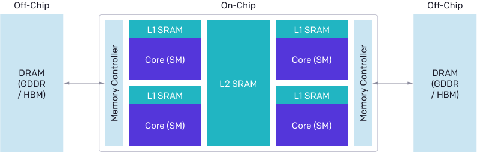

读 A 算 B 写 B
Triton Kernel 与编译优化
GPU 快，但大部分时间在「等数据」而不是「算」。Triton 让你用接近 Python 的语法写出 CUDA 级别的性能；再叠加 torch.compile 和 CUDA Graph，把访存等待和 kernel 启动开销一起消掉。这一页从写第一个融合算子开始，把编译优化这条线走通：先讲清 GPU 为什么「等数据」，再写 Triton 融合 kernel，最后接上 torch.compile 的图级融合与 CUDA Graph 的启动消除。
和 FlashAttention 的关系
FlashAttention 本质是「把注意力算子在 SRAM 内融合 + 重计算」，是算子融合最经典的案例。本页讲的 Triton、torch.compile、CUDA Graph 正是实现这类融合与消除其开销的工程手段——理解本页，再去看 手写 FlashAttention Kernel 会顺很多。
一图看懂
性能瓶颈在地图上：GPU 算力是「高速公路」，显存带宽是「收费站」。一个 kernel 若反复读写显存（读 → 算 → 写 → 再读），时间全耗在过收费站上。融合算子的思路是把多次「读算写」合成一次；Triton 负责把 tiling 和调度这些脏活包起来；torch.compile 做图级融合；CUDA Graph 把多次 kernel 启动压缩成一次。
- 朴素实现:多次访存
- 读 B 算 C 写 C
- 读 A 算 B 写 B
读 A 一次算完 B+C+D 写 D- 朴素实现:多次访存融合 + Triton tiling
- 读 C 算 D 写 D
- 读 B 算 C 写 C
torch.compile 图融合CUDA Graph 免启动- 读 A 一次算完 B+C+D 写 D
一、为什么 GPU 会「等数据」：访存墙
理解 Triton 之前，先理解 GPU 的真实瓶颈。GPU 的算力增长远快于显存带宽增长——这就是「访存墙」（memory wall）：
- A100 FP16 算力~312 TFLOPs每字节数据可做~150 次浮点运算HBM 带宽~2 TB/s读一个 4KB tile~2μs算力侧访存侧
- 算术强度
- 算力侧
- 访存侧
- 访存受限等数据
- 算术强度强度低（如逐元素算子）
计算受限算不完- 算术强度强度高（如矩阵乘）
权威原图：GPU 的基本架构（来自 Triton 官方博客）
Triton 团队在 2021 年开源 Triton 时，在官方博客里放了一张「GPU 基本架构图」——它是官方为解释「为什么 GPU 编程难」亲手画的示意图，权威性等同论文图。图上能看到多个 SM（流多处理器）、L2 缓存和 DRAM（HBM），以及它们之间的连接：每个 SM 是「算的地方」，DRAM 是「存的地方」，中间隔着一道带宽有限的管道。这张图的价值在于把「访存墙」画成了看得见的物理结构——数据要从 DRAM 进到 SM 里的计算单元，必须穿过这道窄管道；而 Triton 要做的，就是让数据在这条管道上少走几个来回。

新手读这张图抓三点：① 一个个小方块是 SM——每个 SM 里有自己的片上 SRAM（共享内存）和寄存器，这是「算得快」的地方；② 大块区域是 DRAM（HBM）——所有数据的常住地，容量大但带宽有限；③ 中间那条连接通道——数据每一次从 DRAM 到 SM 都要付一次时间成本。图里没有直接标出带宽数字，但结合 GPU 显存层级 的知识：HBM 带宽约 3 TB/s、SM 内 SRAM 约 19 TB/s，差 5–6 倍。Triton 的设计哲学就是把这 5–6 倍找回来：把要反复用的数据块搬进 SRAM（tiling），一次搬入、多次计算，而不是每算一步都回 DRAM 取。这也是本页所有「融合」优化的物理依据。
访存墙不是静态的——它随着 GPU 代际演进而越来越严重。原因在于：算力（TFLOPs）每代翻倍以上，而 HBM 带宽增长慢得多（约每代 1.5-2 倍）。下面是一组公开规格的量级对比（具体数字以 NVIDIA 官方 datasheet 为准）：
| GPU 代次 | HBM 带宽（公开规格量级） | FP16 稠密算力（公开规格量级） | 机器平衡点（算力÷带宽，FLOP/Byte） |
|---|---|---|---|
| V100 (Volta) | ~0.9 TB/s | ~125 TFLOPs | ~140 |
| A100 (Ampere) | ~2.0 TB/s | ~312 TFLOPs | ~156 |
| H100 (Hopper) | ~3.35 TB/s | ~990 TFLOPs | ~295 |
注意 H100 的平衡点（~295）比 A100（~156）高近一倍，意味着同样一段低算术强度代码，在 H100 上「卡带宽墙」更严重——因为算力涨得快、带宽没跟上。这正是为什么融合与编译优化在 newer GPU 上收益更大：算得快没用，得先让数据喂得过来。回到 GPU 架构 的显存层级看，HBM 和 SRAM 之间的带宽差（约 19 TB/s vs 2-3 TB/s）才是融合能「用 SRAM 换 HBM」的根本原因。
关键概念是算术强度（arithmetic intensity）：每字节数据上做的浮点运算次数，单位是 FLOP/Byte。逐元素算子（如 a + b）强度极低——读两个数、算一次、写一个数，全程在等数据。这就是为什么「融合」能提速：把多个低强度操作合成一个，中间结果留在片上寄存器/SRAM，少过几次「收费站」。算术强度的具体算法与 Roofline 模型，我们在 FLOP 与显存核算 里详细展开；本页先记住一个结论：算力 ÷ 带宽 = 机器平衡点（A100 约 156 FLOP/Byte），低于它就会卡在带宽墙。
展开：手算算术强度，看清谁在访存墙上
逐元素 y = a + b（FP16）：读 a、b 共 4 字节，算 1 次 FLOP，写 y 2 字节。算术强度 = 1 / (4+2) ≈ 0.17 FLOP/Byte。远低于平衡点 156——典型访存受限，时间全在搬数据。
矩阵乘 C = A·B，M=N=K=4096（FP16）：计算量 2·M·N·K = 2·4096³ ≈ 1.37×10¹¹ FLOP；读 A(MK)+B(KN)+写 C(MN) = 3·4096²·2 字节 ≈ 1.0×10⁸ 字节（约 100 MB）。算术强度 = 1.37×10¹¹ / 1.0×10⁸ ≈ 1370 FLOP/Byte。远高于平衡点——典型计算受限，瓶颈是算力不是带宽。
Softmax / RMSNorm（对一行 N）：计算量只有 O(N) 级 FLOP，但要读写整行 N 个元素，算术强度也是 O(1)/字节级别，同样访存受限。这正是注意力里 softmax、归一化层容易被「融合掉」的原因。
结论：算子越偏「逐元素 / 归一化 / softmax」越该融合；矩阵乘本身已经计算受限，融合收益主要在「省掉它前后的低强度算子」而非矩阵乘自己。一个融合 kernel 把「matmul → 逐元素激活 → norm」串起来，等于把中间一串低强度访存全部消除。
二、Triton 的编程模型：tile 与 block
先打个比方：手写 CUDA 像是自己拆装一台冰箱——你要亲手拧每一颗螺丝（管理线程、共享内存、同步）；Triton 则是「把冰箱搬回家，插上电就用」——你说清楚「我要把这块数据算成什么样」，剩下的螺丝活全由编译器代劳。这个抽象的核心，是把「线程」换成「数据块（tile）」。
手写 CUDA 时，你要亲自管理线程块、共享内存、同步——容易错且费时。Triton 的抽象是tile（数据块）：你把问题描述成「对一大块数据做某种操作」，Triton 自动决定怎么切分、怎么调度、怎么利用共享内存。它刻意不暴露「线程」这一层：你写的是「一个 program 处理一个 tile」，而 program 如何拆成 32 线程的 warp、warp 如何映射到 SM，全交给编译器（基于 LLVM）。这套抽象和 GPU 的 SM/warp 执行模型 是一一对应的——program 大致对应一个线程束组，tile 对应它能放进 SRAM 的那块数据。
- 大张量[4096, 4096]
- 切成 tile 块[128, 128]
- 每个 program处理一个 tile
- 编译器映射到warp / 线程
- 片上 SRAM快速计算
- 写回 HBM
- block：一次 kernel 处理的数据块，声明为
tl.arange/tl.zeros等； - 指针算术：用偏移量定位数据，而不是让每个线程手动算 index；
- 自动并行：编译器把 block 映射到 GPU 的线程束（warp），程序员不碰底层线程；
- mask：块边界常不整齐，用 mask 屏蔽越界元素，避免读脏数据或越界写。
理解三个 Triton 原语能避免大部分初学错误：tl.program_id(axis) 返回当前 program 在第 axis 维的编号，多于一维时用它定位「我在算哪一块」；grid 是启动时的块数（如 (triton.cdiv(N, BLOCK),)），约等于「要并行多少个 program」；num_warps（可在 autotune 里调）决定每个 program 内部用几个 warp 协作。你不需要写 threadIdx/blockIdx，也不用手动做 __syncthreads()——同一 tile 内的同步由编译器在数据依赖处自动插入。
展开：融合 RMSNorm 的 Triton 思路（一个真实可参考的融合模式）
RMSNorm 传统实现要算平方均值、归一化、乘可学习权重，中间产生多份临时张量。融合 kernel 让这些步骤在同一个 kernel 内、同一块数据上完成：
@triton.jit
def fused_rmsnorm_kernel(X, Y, W, stride, N, BLOCK: tl.constexpr):
# 一个 program 处理一行
row = tl.program_id(0)
cols = tl.arange(0, BLOCK)
x = tl.load(X + row * stride + cols, mask=cols < N)
var = tl.sum(x * x) / N # 行内平方均值
x = x / tl.sqrt(var + 1e-5) # 归一化
w = tl.load(W + cols, mask=cols < N) # 只加载一次权重
y = x * w # 乘仿射 + 完成
tl.store(Y + row * stride + cols, y, mask=cols < N)要点：整行数据只从 HBM 读一次、只写一次，归一化与仿射全在 SRAM/寄存器里完成。真实工程里还会叠加残差相加、激活函数（如 SiLU），把这些「前后相邻的低强度算子」一并融进同一个 kernel——这正是 推理引擎 里 kernel 数量远少于算子数量的原因。上面是示意性代码，生产实现还需处理多行并行、向量化等细节。
三、实战：写一个融合算子
以一个经典例子开始：y = (x + 1) * 2 的逐元素融合。朴素实现要 3 次访存（读 x、写中间、读中间、写 y），融合后只需 1 次读 + 1 次写。
import torch
import triton
import triton.language as tl
@triton.jit
def fused_eltwise_kernel(
X, Y,
stride_x, stride_y,
N,
BLOCK: tl.constexpr, # 每 program 处理的元素数
):
"""融合逐元素算子: y = (x + 1) * 2
与朴素实现(y1=x+1; y2=y1*2)相比:
中间结果留在片上寄存器，只有一次读一次写
"""
pid = tl.program_id(0)
offs = pid * BLOCK + tl.arange(0, BLOCK)
# 一次性加载（保证越界安全）
mask = offs < N
x = tl.load(X + offs * stride_x, mask=mask)
# 融合计算：不写中间结果
y = (x + 1.0) * 2.0
tl.store(Y + offs * stride_y, y, mask=mask)
def fused_eltwise(x):
N = x.numel()
y = torch.empty_like(x)
BLOCK = 1024
grid = (triton.cdiv(N, BLOCK),)
fused_eltwise_kernel[grid](
x, y,
x.stride(0), y.stride(0),
N, BLOCK=BLOCK,
)
return y
# 精度验证
x = torch.randn(1_000_000, device="cuda")
y = fused_eltwise(x)
y_ref = (x + 1.0) * 2.0
print("最大误差:", (y - y_ref).abs().max().item()) # ~0
# 性能对比：vs 两次 kernel
import time
def bench(fn, n=50):
for _ in range(5): fn()
t0 = time.time()
for _ in range(n): fn()
return (time.time() - t0) / n * 1e6 # μs
fusion_us = bench(lambda: fused_eltwise(x))
naive_us = bench(lambda: (x + 1.0) * 2.0)
print(f"融合 kernel: {fusion_us:.1f} μs")
print(f"朴素两段式: {naive_us:.1f} μs")这个例子的要点：mask 处理越界（N 不能被 BLOCK 整除）、tile 加载（一次 load 一块）、片上融合（中间结果不落 HBM）。几个易错点值得单独点出：① triton.cdiv(N, BLOCK) 是「向上取整除法」，保证最后一块也能被覆盖；② mask=mask 在 load/store 时必须带，否则越界线程会读相邻脏数据或写坏别处内存；③ 精度验证用 (y - y_ref).abs().max() 而不用 ==，因为 FP16 融合顺序不同会有微小舍入差（通常 ~1e-3 量级，属正常）；④ stride 参数让 kernel 支持非连续张量，若你的输入保证连续可省略，但生产代码带上更稳。真实场景中，融合注意力、融合 Layernorm、融合激活+dropout 都遵循同一思想。
新手最容易搞错
mask 不是「可选优化」，而是正确性的一部分。很多新手觉得「我数据量刚好是 BLOCK 的整数倍，用不上 mask」，于是把
mask=mask 省了——这个习惯会在某天输入形状一变（比如换成 1,000,001 个元素）时，让越界线程读进相邻内存的脏数据、或把结果写到别人的地址上，而且不报错、结果静默错误。规则只有一条：凡是索引可能越界的 tl.load / tl.store，一律带 mask；万一真的不需要，也建议用 tl.multiple_of / tl.max_contiguous 显式告诉编译器「这段不会越界」，把「正确性保障」和「性能优化」分开写清楚。
融合前后访存对比（示意）
对 y = (x + 1) * 2 这种两阶段逐元素算子，朴素实现要 4 次 HBM 往返（读 x、写 t、读 t、写 y），融合后只有 2 次（读 x、写 y）。下面这张图把相对访存次数画出来——融合并非「更快的算」，而是「更少的搬」。
示意：HBM 访存次数与估算耗时。融合把 4 次往返降到 2 次；数值以实际 profiling 为准，但「次数减半」的阶是确定的。
四、tiling 与调度：Triton 替你做了什么
手写 CUDA 时，tiling（切块）和调度（怎么并行）是两大难题。Triton 把它自动化了，但理解原理有助于选对块大小：
- 张量太大放不进共享内存/SRAM切成合适块大小如 [128, 128]块大小影响寄存器用量与占用率每个 program 处理一块program 映射到warp（线程束）编译器自动做循环展开与向量化Tiling（切块）调度（并行）
- Triton 自动处理
- Tiling（切块）
- 调度（并行）
- 性能调优：试不同 BLOCK 大小用 triton.testing.do_bench
- Triton 自动处理
- 块大小经验：逐元素算子用 512-2048；矩阵乘用 [64-128, 64-128]；太大寄存器溢出、太小占用率不足；
- 自动向量化：编译器把连续访存合并成宽加载（如 128-bit），减少访存指令数；
- 性能调优：用
triton.testing.do_bench测不同配置，找最优块大小。
| 算子类别 | 推荐 BLOCK | 块太大 | 块太小 |
|---|---|---|---|
| 逐元素 / 激活 | 512 – 2048 | 寄存器溢出到 local mem | 占用率不足，launch 占比升 |
| 向量 / norm | 按行对齐（如 1024） | 一行跨多 program 难同步 | 向量化宽度利用不充分 |
| 矩阵乘 (GEMM) | [64–128, 64–128] | SRAM 装不下 tile | 浪费 Tensor Core 吞吐 |
| 归约 (softmax/sum) | 行维度整除 BLOCK | mask 覆盖过多浪费 | 归约并行度不够 |
上表为经验范围，最优值依赖具体 shape 与 GPU 代次；最终以 triton.testing.do_bench 实测为准。
五、torch.compile：图级融合
Triton 解决「单个算子怎么融合」，torch.compile 解决「整个模型怎么融合」。它把 Python 计算图编译成一组 Triton kernel，自动合并相邻算子、消除中间张量。
- Python 模型
- 捕获计算图（FX / TorchInductor）
- 计算图
- 算子融合相邻算子合并
- 生成 Triton kernels
- kernel 缓存二次运行免编译
- 高性能运行
import torch
# 定义一个小模型
class Net(torch.nn.Module):
def __init__(self, d=512):
super().__init__()
self.fc1 = torch.nn.Linear(d, d)
self.act = torch.nn.GELU()
self.fc2 = torch.nn.Linear(d, d)
self.dropout = torch.nn.Dropout(0.1)
def forward(self, x):
x = self.fc1(x)
x = self.act(x)
x = self.fc2(x)
return self.dropout(x)
model = Net().cuda()
x = torch.randn(1024, 512, device="cuda")
# 三种模式对比
model.eval()
with torch.no_grad():
# 默认（eager）
out_eager = model(x)
# torch.compile：图级融合（max-autotune 会调优）
compiled = torch.compile(model, mode="max-autotune")
out_compiled = compiled(x)
print("输出一致:", torch.allclose(out_eager, out_compiled, atol=1e-5))
# 注意：首次 compile 有编译开销（秒级），
# 二次运行命中缓存后才是真实性能torch.compile 的三档 mode 取舍如下：
| mode | 编译耗时 | 运行性能 | 适用 |
|---|---|---|---|
| default | 中 | 中高 | 通用场景，安全稳健 |
| reduce-overhead | 中 | 高（含 CUDA Graph） | 固定形状在线推理 |
| max-autotune | 高（秒~分钟级） | 最高（充分调优） | 离线批处理、可容忍编译成本 |
生产推理常用 reduce-overhead，因为它在融合之外还顺手把 CUDA Graph 用上。注意首次编译的秒级开销会污染 benchmark——务必 warmup 后再计时，否则会误判「torch.compile 反而更慢」。
torch.compile 内部大致分三步：① 捕获——用 TorchDynamo 把 Python 执行拦截至 FX 计算图（保留张量形状/数据类型等作为 guard）；② lowering——TorchInductor 把 FX 图翻译成底层 IR，并做算子融合、布局优化，最终生成 Triton（或 C++/OpenMP）kernel；③ 缓存——编译产物按「形状+dtype+设备」等 key 缓存到磁盘。当新输入的 guard 条件不变（形状、dtype 一致），直接命中缓存、跳过编译；一旦形状变化（如 batch size 改了），guard 失效，触发重新编译——这正是变长推理要特别小心的点。想深入显存与算力的量化关系，见 FLOP 与显存核算。
torch.compile 的缓存状态机
理解编译缓存的状态迁移，能避免两个常见误判：① 把首次编译开销算进推理延迟；② 形状一变就重新编译、缓存反复失效。
stateDiagram-v2
[*] --> 未编译: 第一次遇到该图
未编译 --> 编译中: 触发 compile
编译中 --> 已缓存: 生成 Triton kernel
已缓存 --> 命中复用: 同形状再次调用
已缓存 --> 重新编译: 形状 dtype 变化
命中复用 --> 命中复用: 持续复用
重新编译 --> 已缓存
六、CUDA Graph：消掉启动开销
最后一个隐藏杀手是kernel 启动开销——每次调 kernel 都有微秒级 CPU→GPU 通信，小模型上百个 kernel 累加起来很可观。CUDA Graph 把整条调用链「录制」成一个图，一次启动执行全部。
- kernel 1启动 ~5μskernel 2启动 ~5μskernel N启动 ~5μs总开销 = N × 5μs录制所有 kernel一次图启动~10μs总开销 ≈ 10μs普通调用CUDA Graph
- 小模型场景
- 普通调用
- CUDA Graph
- 启动开销占比高时Graph 收益巨大
- 小模型场景
import torch
def make_cuda_graph(model, x, n_warmup=3):
"""录制 CUDA Graph"""
# 1. 预热（分配缓存、触发编译）
for _ in range(n_warmup):
model(x)
torch.cuda.synchronize()
# 2. 用静态输入捕获
g = torch.cuda.CUDAGraph()
# 静态输入：Graph 要求固定地址
static_x = x.clone()
static_out = torch.empty_like(x)
with torch.cuda.graph(g):
static_out.copy_(model(static_x))
return g, static_x, static_out
# 使用：图对象反复重放
# g.replay() # 一次执行整条链
# 注意：输入输出必须用静态缓冲（static_x / static_out）代价与限制：输入输出必须是固定地址的静态缓冲（形状/地址不能变）；动态形状场景需配合 padding 或分段 Graph；显存占用略增。对 batch 固定的在线推理，收益非常直接。
除了「固定地址」，还有几个易踩的细节：① 图内不能依赖数据相关的 Python 控制流——Graph 录制的是「kernel 调用序列」的快照，录制时走了哪个 if 分支，重放时就永远走那个分支；② 涉及 CPU↔GPU 同步（如 .item()、print）会打断录制，需放到图外；③ 非确定性算子（如某些原子操作）在图里行为可能与录制时不一致；④ 录制本身有一次开销，应只录制「稳定、重复」的那段，把预处理/后处理留在图外。现代 推理引擎 通常会用「padding 到固定 bucket + 分段 Graph」来兼顾动态性与 Graph 收益。
最常见的两个坑
① 给 CUDA Graph 喂了动态形状的输入，报「地址不一致」或静默错误；② 用 Python 控制流（if/for 依赖数据值）写进 graph 区域，录制的是某次固定分支，换输入后行为错乱。Graph 只录「kernel 调用序列」，不录数据相关的分支。
kernel 启动时序：普通 vs Graph
把「逐 kernel 启动」和「Graph 一次启动」画成时序，能直观看到启动开销被压缩：
sequenceDiagram
participant CPU as CPU 调度
participant GPU as GPU 执行
Note over CPU,GPU: 普通调用（3 个 kernel）
CPU->>GPU: 启动 kernel1 (~5μs)
CPU->>GPU: 启动 kernel2 (~5μs)
CPU->>GPU: 启动 kernel3 (~5μs)
Note over CPU,GPU: CUDA Graph
CPU->>GPU: 一次 graph.replay() (~10μs)
GPU->>GPU: 图内 kernel1→2→3 连续执行
七、选型决策：什么时候用哪一层
| 手段 | 解决的问题 | 成本 | 适用 |
|---|---|---|---|
| 手写 Triton kernel | 自定义融合算子 | 开发成本高 | 新算子、标准库没有的融合 |
| torch.compile | 图级自动融合 | 首次编译慢 | 通用模型加速 |
| CUDA Graph | kernel 启动开销 | 静态输入限制 | 固定形状在线推理 |
| 三者组合 | 全链路优化 | 复杂度累积 | 生产推理引擎 |
工程建议：先用 torch.compile 拿自动收益 → 瓶颈算子再手写 Triton → 固定形状场景叠加 CUDA Graph。不要一上来就手写 kernel，先用编译器的免费午餐。
一个真实组合拳：在线推理服务里，先用 torch.compile(reduce-overhead) 把模型图融合并自动套上 CUDA Graph，再用 profiler 找到仍占大头的自定义算子（如某个特殊位置编码、MoE 的 token 路由），针对它手写 Triton kernel 替换；最后用固定 bucket + 静态缓冲让 CUDA Graph 在变长请求上也稳定命中。三层各管一段——图融合管「算子数量」、手写 kernel 管「单个算子的访存」、Graph 管「启动开销」——合起来才能把端到端延迟压到接近硬件下限。
优化手段关系图（mindmap）
核心主题GPU 编译优化
01算子融合
- Triton 手写 kernel
- torch.compile 图级
- 消除中间张量
02访存优化
- tiling 切块
- SRAM 复用
- 提高算术强度
03启动消除
- CUDA Graph 录制
- 静态缓冲
04调优
- do_bench 测块大小
- autotune 搜配置
- warmup 再计时
组件关系（classDiagram）
classDiagram
class Triton {
+ @triton.jit
+ tile block 抽象
+ 手写融合 kernel
}
class TorchCompile {
+ 捕获计算图
+ 图级融合
+ 生成 Triton
}
class CUDAGraph {
+ 录制 kernel 序列
+ 一次 replay
+ 需静态输入
}
class 推理引擎 {
+ 组合三者
+ 固定形状优化
}
TorchCompile ..> Triton : 生成
推理引擎 --> Triton
推理引擎 --> TorchCompile
推理引擎 --> CUDAGraph
八、Triton autotune：让编译器替你搜最优块大小
前面说「用 do_bench 手测块大小」，但手测很累。Triton 提供 @triton.autotune，让你列出几组候选配置（BLOCK 大小、num_warps、num_stages），它在第一次调用时对每组实测、选最快的固化下来：
import triton
import triton.language as tl
@triton.autotune(
configs=[
triton.Config({'BLOCK': 512}, num_warps=4),
triton.Config({'BLOCK': 1024}, num_warps=4),
triton.Config({'BLOCK': 2048}, num_warps=8),
],
key=['N'], # N 变化时才重新 autotune
)
@triton.jit
def fused_eltwise_autotune(X, Y, N, BLOCK: tl.constexpr):
pid = tl.program_id(0)
offs = pid * BLOCK + tl.arange(0, BLOCK)
mask = offs < N
x = tl.load(X + offs, mask=mask)
y = (x + 1.0) * 2.0
tl.store(Y + offs, y, mask=mask)
# 第一次调用会跑完所有候选配置挑最优；之后同 key 直接复用
x = torch.randn(1_000_000, device="cuda")
y = torch.empty_like(x)
grid = (triton.cdiv(x.numel(), 1024),)
fused_eltwise_autotune[grid](x, y, x.numel(), BLOCK=1024)key=['N'] 的含义是：只有当 N 变化时才重新 autotune，否则复用已选配置——和 torch.compile 的 guard 思想一致。autotune 的候选空间不宜过大（配置越多，首次开销越大），一般 3-5 组覆盖「小/中/大块 + 不同 warp 数」即可。
展开：踩坑实录——autotune 选出的「最优」为什么反而更慢
一个真实发生过的场景：给一个融合 kernel 配了 6 组 autotune 候选，跑完自动挑选后，选中配置的实测吞吐却比手写固定配置低了 20%。排查后发现三个问题叠加：
- 没做 warmup 就计时：第一次调用同时触发了 JIT 编译，编译耗时被算进某一组配置的「成绩」里，导致它被误判为最差而排除；而真正慢的配置因为编译缓存已命中，反而显得快。
- 候选里混入了必然溢出的组合：某组 BLOCK=4096 + num_warps=8 让寄存器直接溢出，编译器静默地把多余寄存器丢进 local memory（本质是 HBM），跑出来的「成绩」其实包含了大量慢速访存——但因为没报错，被 autotune 当成合法候选保留甚至选中。
- key 没设对：
key=['N']只对 N 敏感，但你的输入形状从 (1024, 512) 换成 (512, 1024)，N 没变、shape 变了，旧配置被复用——而它对新 shape 根本不是最优。
三条对策：① 用 triton.testing.do_bench 替代手写计时（它自带 warmup 与清理）；② 在候选里手工排除「明显会溢出的组合」，别把一切交给 autotune；③ 用 Nsight Compute 复核最终 kernel 的 register spilling 是否为零——不为零就该降级 BLOCK。
| 调优维度 | 含义 | 过大/过小的影响 |
|---|---|---|
| BLOCK | 每 program 处理元素数 | 过大→寄存器溢出；过小→占用率不足 |
| num_warps | 每 program 的 warp 数 | 过大→SM 内 warp 争抢；过小→并行度不够 |
| num_stages | 软件流水线级数 | 过大→占更多 SRAM；过小→访存不能隐藏 |
benchmark 的正确姿势
测融合 / 编译收益时务必：① 先 warmup 若干次（触发编译、填充缓存、预热 GPU 频率）再计时；② 用
torch.cuda.synchronize() 等 GPU 真正算完再停表，否则只测到「发起请求」的时间；③ 多次重复取中位数而非单次；④ 把 autotune / compile 的一次性开销与稳态运行分开报告。否则很容易得出「融合反而更慢」「torch.compile 拖慢推理」这类错误结论。
九、占用率与寄存器预算：块大小为什么不能无限大
前面反复提到「块太大→寄存器溢出」「块太小→占用率不足」，但「占用率」到底是什么、它和寄存器预算如何互相牵制，值得单独讲清。一句话：占用率（occupancy）是一个 SM 上同时活跃 warp 数占理论上限的比例，它决定了能否用「足够多的并行」去掩盖访存延迟。
每个 program 在 Triton 里会被编译成一组 warp，每个线程要用寄存器。SM 的寄存器总量是固定的（如 A100 每 SM 约 65536 个 32-bit 寄存器）。于是出现硬约束：单 program 寄存器用量 × 同时活跃的 program 数 ≤ SM 寄存器总量。块越大、每个 program 要缓存的 tile 行越多，寄存器越容易超标；一旦超标，编译器把多出来的寄存器「溢出」到速度慢得多的 local memory（本质还是 HBM），反而拖慢——这正是「块太大」那一行表格里写的「寄存器溢出到 local mem」的底层原因。
| 现象 | 根因 | 调节手段 |
|---|---|---|
| 寄存器溢出（register spilling） | 单 program 寄存器超过预算 | 减小 BLOCK、降 num_stages、合并中间变量 |
| 占用率不足 | program 太少，并行度不够掩盖延迟 | 增大 BLOCK 或减小单 program 寄存器占用 |
| SM 内 warp 争抢 | num_warps 过大 | 在 autotune 里下调 num_warps 重试 |
实际调优时，占用率不是越高越好——过高可能挤占共享内存/寄存器的余量，反而限制每块能用的 tile 大小。所以 BLOCK 大小与 num_warps 是一起搜出来的：这正是 @triton.autotune 把 BLOCK、num_warps、num_stages 都列为候选的原因。判断瓶颈到底在访存还是寄存器，用 NVIDIA 的 Nsight Compute 看「achieved occupancy」和「register spilling」两项指标，比盲目试块大小靠谱得多。
别把占用率当唯一目标
新手常迷信「占用率拉满」，但 FlashAttention 这类内核占用率反而偏低——它靠的是把数据留在 SRAM 里减少访存，而不是靠海量并行掩盖延迟。调优的终点永远是「端到端延迟最低」，占用率只是诊断工具，不是目标本身。
寄存器溢出到底慢多少，怎么看出来
「溢出到 local memory」听起来只是慢一点，实际是数量级的差距。寄存器里的变量读写几乎零额外延迟（就在寄存器文件内），而 local memory 本质落在 HBM 上，一次访问要扛几百个周期的全局内存延迟——比寄存器访问慢约两个数量级（100~400 倍）。更糟的是溢出通常成片发生：原本顺手的逐元素操作会变成一串「写 HBM → 读 HBM」的往返，算术强度不降反升的同时带宽还被吃满，kernel 直接从「寄存器受限」退化成「带宽受限」。所以 autotune 里如果发现某个配置块越大反而越慢，十有八九是寄存器溢出了。
怎么确认？编译 Triton kernel 时让底层 ptxas 报详细统计：用 ptxas --ptxas-options=-v（或 nvcc -Xptxas -v）编译生成的 PTX。重点看两行：Used N registers 表示每个线程用了多少寄存器；spilled N registers（有时记为 bytes of spill stores/loads）大于 0 就说明有溢出。只要 spilled 非零，无论 occupancy 多高，这个配置都该在 autotune 里降权。一个经验阈值：把单线程寄存器用量控制在「每 SM 寄存器上限 ÷ 期望活跃线程数」以内、给 local memory 留零余量最稳。
再说 num_warps 和 num_stages 各自管什么。num_warps 决定一个 program 内部用几个 warp 协作——越多，同一块内能掩盖的访存延迟越强，但寄存器总量被更多 warp 分摊，单 warp 可用寄存器变少，更容易触发溢出；num_stages 是软件流水线级数，即「同时有多少块 tile 在飞行中」，级数越高越能隐藏 HBM 延迟，但每块都要在 SRAM 里占一份缓冲区，级数太大直接把 SRAM 撑爆。二者都要和 BLOCK 一起搜，没有孤立的最优值。
从 PyTorch 算子到 Triton kernel：哪些值得手写
新手最容易走两个极端：要么所有算子都手写（浪费几周），要么一个都不写（错过 fusion 收益）。正确思路是先 profile 定位，再决定。值得手写 Triton 的算子通常满足三个特征：① 它是端到端时间的主要开销；② 它偏「逐元素 / norm / softmax / 激活」这类访存受限算子，融合收益大；③ torch.compile 已经融合过、但 profiler 仍显示它是瓶颈（说明需要更激进的定制融合，比如把「路由 + 加权 + 归一化」一次性融掉）。典型候选包括：RMSNorm/LayerNorm 这类多步 norm、激活 + dropout 融合、特殊位置编码（如带旋转或时间维度的 PE）、MoE 的 token 路由与门控、以及非标准注意力变体。
反过来，不值得手写的有：纯矩阵乘（cuBLAS/cuDNN 已经极致优化，你手写几乎不可能更快）、torch 已经自动融合的简单链、以及那些只占 1% 时间、花两周换 3% 提升的边角算子。改写的心路可以总结成一句：先用 torch.compile 吃免费午餐，再用 profiler 找出那一个「又慢又偏访存又没被充分融合」的算子，只替它写一个 Triton kernel，其余一律留在 Python 侧。这样开发成本最小，收益却最集中。
要点速查
- 本质：GPU 瓶颈是「访存墙」——低算术强度算子等数据；融合 = 提高算术强度，减少 HBM 往返。
- 权威图：Triton 官方博客的 GPU 架构图直接画出了 SM / DRAM / 带宽管道，访存墙是物理结构而非抽象概念。
- Triton 抽象：tile/block 编程，编译器负责切块、调度、warp 映射；mask 处理越界。
- 块大小：逐元素 512-2048，矩阵乘 [64-128]²；用 do_bench 调优。
- torch.compile：图级融合相邻算子，default/reduce-overhead/max-autotune 三档；首次编译慢、需 warmup。
- CUDA Graph：N 次 kernel 启动合成一次，需静态输入缓冲，适合固定形状推理；勿塞数据相关分支。
- 选型顺序：先 torch.compile → 瓶颈手写 Triton → 固定形状加 Graph。
- 常见坑：一上来手写 kernel；忽略 mask 越界；Graph 用动态输入报错；编译缓存未命中导致误判性能；autotune 候选混入溢出配置。
参考文献与延伸阅读
- OpenAI, "Introducing Triton: Open-Source GPU Programming for Neural Networks" (2021) — Triton 官方博客，本页权威图的出处，也是 Triton 编程模型最权威的入门材料 · openai.com
- Triton 官方文档 — Triton 语言与 kernel 编写 · triton-lang.org
- Tillet, Kung, Cox, "Triton: An Intermediate Language and Compiler for Tiled Neural Network Computations" (2019) — Triton 论文 · harvard.edu
- torch.compile 官方文档 — PyTorch 编译优化与 mode 说明 · pytorch.org
- CUDA Graphs 官方文档 — CUDA 图捕获与重放 · docs.nvidia.com
- OpenAI Triton GitHub — 融合 Layernorm / softmax / FlashAttention 等参考 kernel 实现 · github.com/triton-lang/triton
接下来
Triton 是写高性能算子的事实标准，实战练手见 手写 FlashAttention；GPU 硬件背景见 GPU 架构；与 FlashAttention 的衔接见 FlashAttention 与 IO 感知注意力；推理引擎如何利用这些优化见 推理引擎。
权威延伸资料
围绕“Triton Kernel 与编译优化”继续深入
本章把模型公式连接到真实硬件：GPU 的执行和内存层级、FLOP 与带宽核算、FlashAttention 的 IO 优化，以及 Triton kernel 的工程方法。
阅读提示：性能问题先判断是算力受限还是访存受限，再用 profiler 和小规模 benchmark 验证；不要把峰值 FLOP 当成实际吞吐。
- FlashAttention: Fast and Memory-Efficient Exact Attention ↗
分块、online softmax 和重计算的原始论文，完整解释“IO 感知”为什么能在不近似的情况下加速。
- CUDA C++ Programming Guide ↗
warp、线程块、共享内存、全局内存和同步语义的权威参考，核对 GPU 章节中的硬件事实。
- CUDA C++ Best Practices Guide ↗
合并访存、occupancy、bank conflict 和性能分析的工程清单，适合配合 profiler 使用。
- Triton Tutorials ↗
从向量加法、矩阵乘法到融合 kernel 的渐进式教程，是实战页面的直接延伸。
- Roofline: An Insightful Visual Performance Model ↗
用算术强度把计算瓶颈和带宽瓶颈放在同一张图上，是性能剖析的经典框架。
资料优先选用原始论文、官方文档、大学课程和公共机构材料；链接按 2026-08-10 检索，具体版本以来源页面为准。
篇章视角
围绕“Triton Kernel 与编译优化”继续深入
发展脉络
系统优化从 GPU 层次结构、Roofline 和通信原语出发，逐步发展到 FlashAttention、算子融合、编译器和端到端 profiling。
机制抓手
先判断瓶颈属于计算、HBM/SRAM 访问、kernel 启动还是跨卡通信，再选择 tile、融合、重计算、并行或布局优化。
工程权衡
理论 FLOP、峰值带宽和实际吞吐常常不同；任何优化都必须同时报告精度、形状覆盖、显存和回退路径。
前沿观察
FP8、异步执行、编译期融合、推理/训练解耦和新一代互联正在改变系统边界，基准应固定硬件、batch、长度和版本。
实践检查能够用 profiler 找到一个端到端热点，并解释优化前后算术强度、显存流量和延迟变化。
学习目标
能用 Triton 的 program、tile、mask 和 autotune 写出融合 kernel，并解释 tile 尺寸如何受寄存器与共享内存约束。
先修关系
先修矩阵乘法、Transformer 前向过程和 GPU 的线程/显存层级；实验需固定硬件与 batch。
最小实验
实现 fused softmax 或 layer norm Triton kernel，与 torch eager/compile 对照；覆盖非 2 次幂长度，执行 25 次 warmup+100 次测量并运行自动求导或参考梯度检查。
验收标准
FP32 最大误差小于 1e-5、低精度误差阈值显式声明，边界 shape 无越界；报告 kernel 数、P50/P95 延迟和至少两组 tile 配置。